Background
Mouse behavioral studies are often conducted in the field of neuroscience to evaluate traits such as sensory-motor function, social interactions, anxiety-like and depressive like behavior, substance dependence and various forms of cognitive function.
Traditionally, the analysisis performed manually through annotation of landmark regions (snout, ears and tailbase) of the mouse and interpreting the results. An anxious mouse is considered to be a mouse that explores less and intitiates less social interaction.
Data
A 30 minute footage of two mice in a "shoebox" cage is provided. The mice are suspected to be filial pairs since no aggresive or sexual behaviour is observed within the footage.
From the footage, the mice with the stripped tail is suspected to be less anxious based on its behavior. As seen in the frame below, the striped tail mouse is exploring the caged while the other mouse is curled up in a corner.
| Sample Frames | Sample Frame 1 | Sample Frame 2 |
| Frames |  |
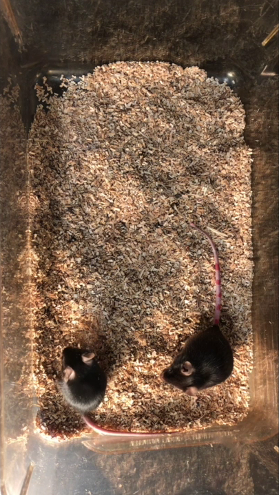 |
Problem Definition
Our goal is to improve upon efficiency within neuroscience research by automating the analysis of the footage. This first involves implementing algorithms that track landmark regions of the mice. Followed by interpreting the tracked landmark regionis meaningfully. Through doing so, we believe we could reduce human error and conflicts in data analysis.
Similar previous work has been done within this domain of research. Such as “Computerized video analysis of social interactions in mice" by Fabrice deChaumont et al in 2012 and “An unsupervised learning approach for tracking mice in an enclosed area” by Jakob Under, et al in 2017. Fabrice's implementation uses geometrical primitives to model and track two mice without requiring any specific tagging. While Jakob's implemetation is basically built as a two-stage process to track mice in an enclosed area using shape matching and deformable segmentation models. Despite Jakob's unsupervised learning approach achieveing a high level of tracking accuracy and outperforming Fabrice's approach, we were curious if we could combine both unspervised learning and a more traditional approach to create a more robust analysis system.
Methodology
Tracking of Landmark Region
To track the landmark regions of the mice, we used Alaxander Mathis' DeeplabCut animal pose estimation software. This involves manually annotating selected frames from the video. The frames were selected by K means clustering to ensure they are randomly and temporally distributed based on visual apperance. The unlabbeled frames are then labelled by a pre-trained ResNet 50 through transfer learning. As DeepLabCut, at the time of the project, doesn't support multi-animal tracking, tracking was done seperately for each mice in the footage.
Attaining Mouse Trajectories
After attaining the tracked landmark regions, getting the trajectory to analyze the level of mouse exploration is trivially done just by plotting the coordinates.
Analysis of Mouse Interactions
To analyze which mice initiates more interaction than the other, we developed our own algorithm. The
algorithm works firstly by detecting an interaction, then back tracking frames previous to interaction to
determine which mouse initiated the interaction.
For analysis, an interaction as the event when the two mice got into close proximity of each other. For our
program,
we took this to be when the mice were within ear distance of each other(distance between the left ear and
right ear of a mouse).
When an interaction was detected, we took the two closest points between the mice and calculated the middle
point of these two points.
We then found the centroid of the closer mouse and constructed a "collision region". This was a square
around the center point using the
distance to the closest centroid as the width and height.
We then back tracked through the marking data to find the last mouse that entered this collision region. The
last mouse to enter this collision
region is considered the mouse to have initiated this interaction.
Upon back tracking the mice that is not within the 'interaction region' first is taken as the mice that
initiates the interaction.
The 30 minute footage was also broken down into six 5 minute footages for the ease of computation.
Results
The mouse trajectory as seen below is in line with the data that the stripped tail mice explore more region within the space compared to the plain tail mice. The stripped tail mice is suspected to be less anxious.
| Video Segment | Segment 1 (0-5 min) | Segment 2 (6-10 min) | Segment 3 (11-15 min) | Segment 4 (16-20 min) | Segment 5 (21-25 min) |
| Striped Tail Trajectories | 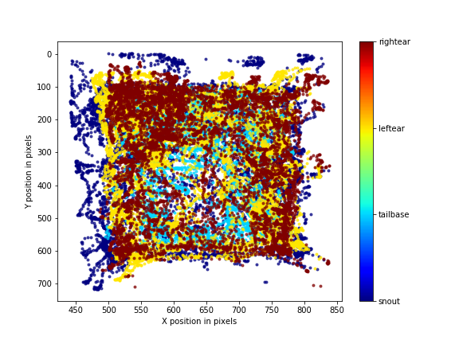 | 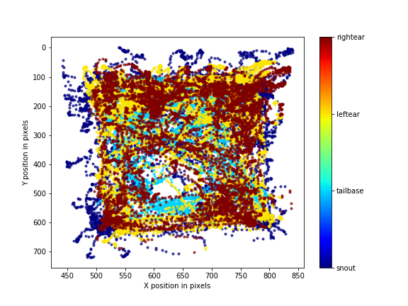 | 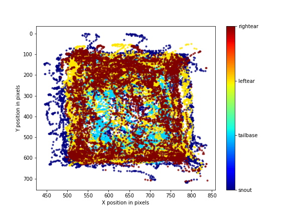 | 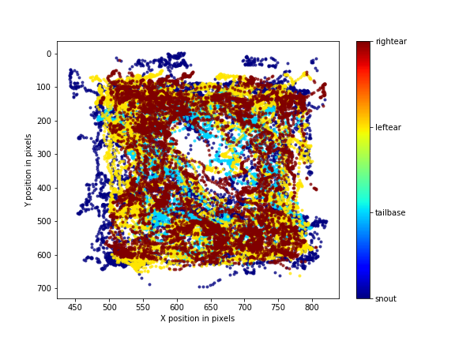 | 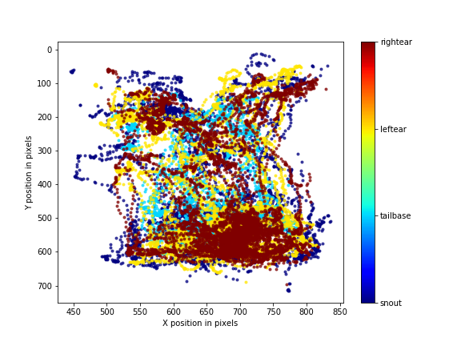 |
| Normal Tail Trajectories | 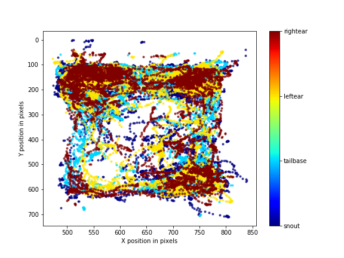 | 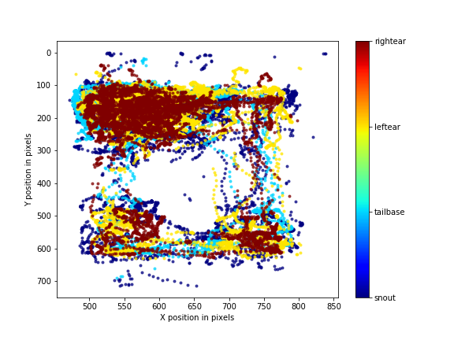 | 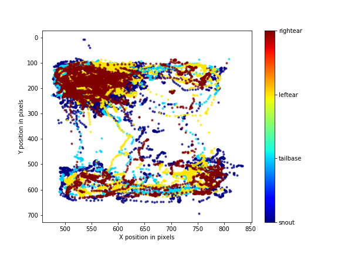 | 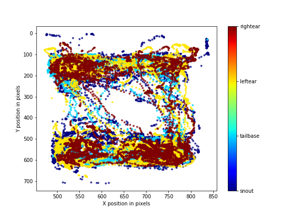 | 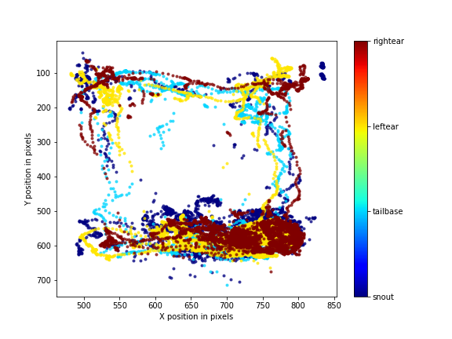 |
Below are exmaple of interactions that our algorithm detected.
| Scenarios | Striped Tail mouse approaches | Normal Tail mouse approaches |
|---|---|---|
| Frames |  |
 |
The results of our algorithm for the 30 minute footage detected 177 interactions in total. In which 149 was initiated by the striped tail mouse, as opposed to only 28 initiated by the plain tail mouse. This again aligns with the data.
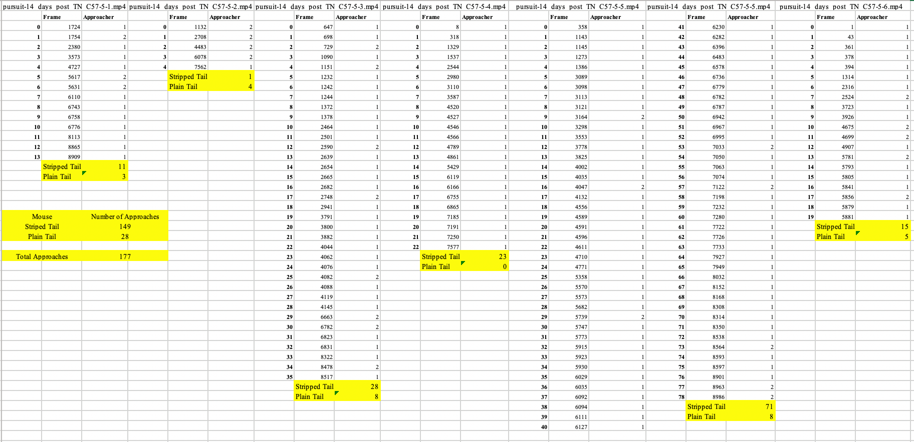Discussion
Due the tracking being done seperately, there are occasion where the tracked region is detected on the other
mice. This impacts the result of our algorithm in analyzing interactions. More specifically it detects a
collision when the a specific landmark region of one mice is wrongly placed ont the other mouse.
Due to time constraints we weren't able to resolve this issue however we believe that a few different
approaches could help. We also played around with the idea of using a circular collision region. However,
this would have been abit more computationally intense and thus we opted for a box-shaped collision region.
A contour based approach for the feature detection was also discussed. It might have made collision
detection more precised
but once again it would be more computationally intense and require other techniques such as image
segmenation. DeepLabCut instead
provided us with a quick and efficient way getting these features tracked with data created in a organized
and easy to processed way.
Credits and Bibliography
Credits
Vivian Gunawan implemented mice tracking on stripped tail mice using DeepLabCut. She also helped with the interaction analysis algorithm. Her background knowledge as a neuroscience major help to understand how to interpret the data.
Yaan Tzi Kan created and implemented the interaction analysis algorithm.
Beatrice Tanaga implemeted tracking of landmark regions on plain tail mice using DeepLabCut.
Report and Presentation was done collaboratively as a group.
Bibiliography
de Chaumont, F., Coura, R., Serreau, P. et al. Computerized video analysis of social interactions in
mice. Nat Methods
9, 410–417 (2012). https://doi.org/10.1038/nmeth.1924
Unger, J., Mansour, M., Kopaczka, M. et al. An unsupervised learning approach for tracking mice in an
enclosed area. BMC Bioinformatics
18, 272 (2017). https://doi.org/10.1186/s12859-017-1681-1"
Mathis, A., Mamidanna, P., Cury, K.M. et al. DeepLabCut: markerless pose estimation of user-defined
body parts with deep
learning. Nat Neurosci 21, 1281–1289 (2018). https://doi.org/10.1038/s41593-018-0209-y
Nath, T., Mathis, A., Chen, A.C. et al. Using DeepLabCut for 3D markerless pose estimation across
species and behaviors.
Nat Protoc 14, 2152–2176 (2019). https://doi.org/10.1038/s41596-019-0176-0
DeeplabCut repository: https://github.com/AlexEMG/DeepLabCut